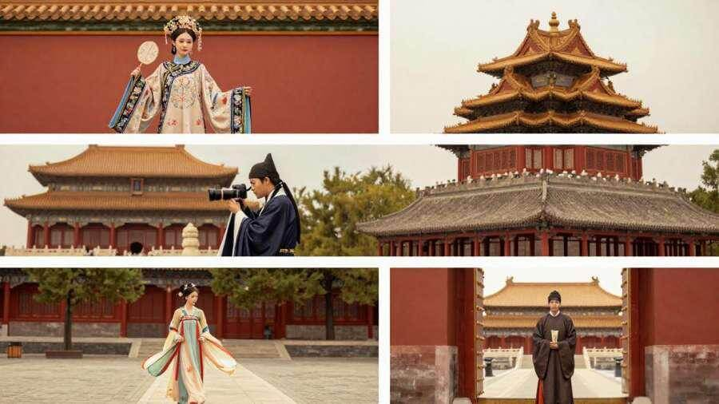
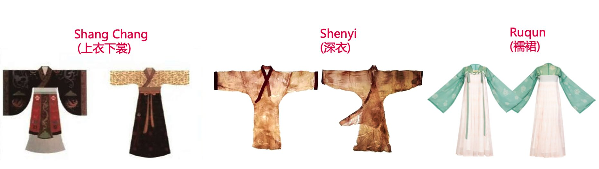
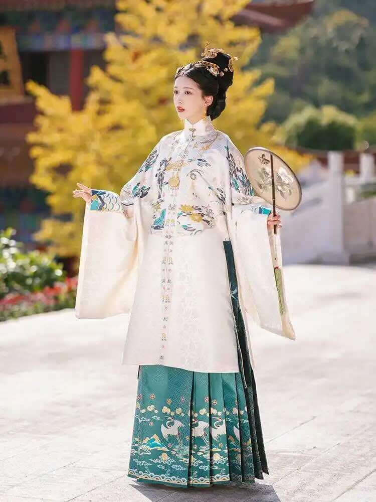
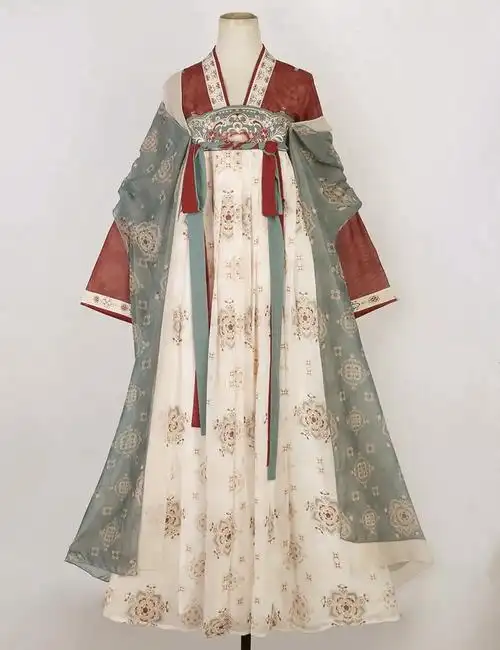
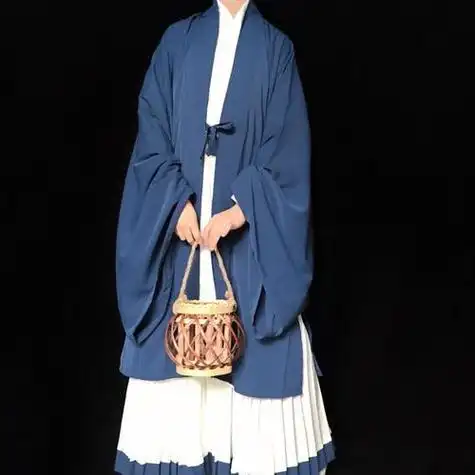
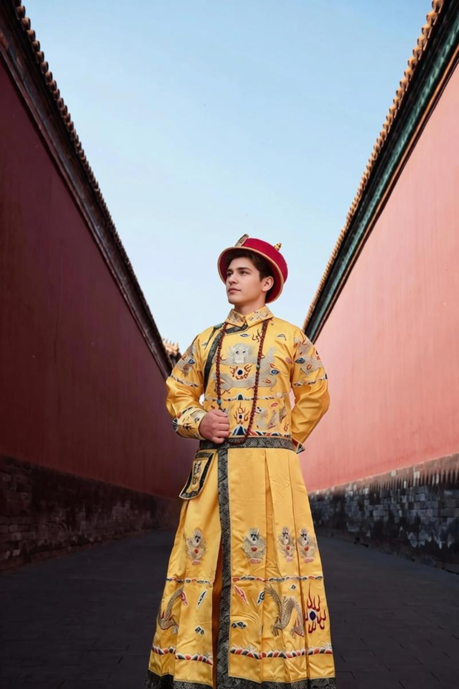
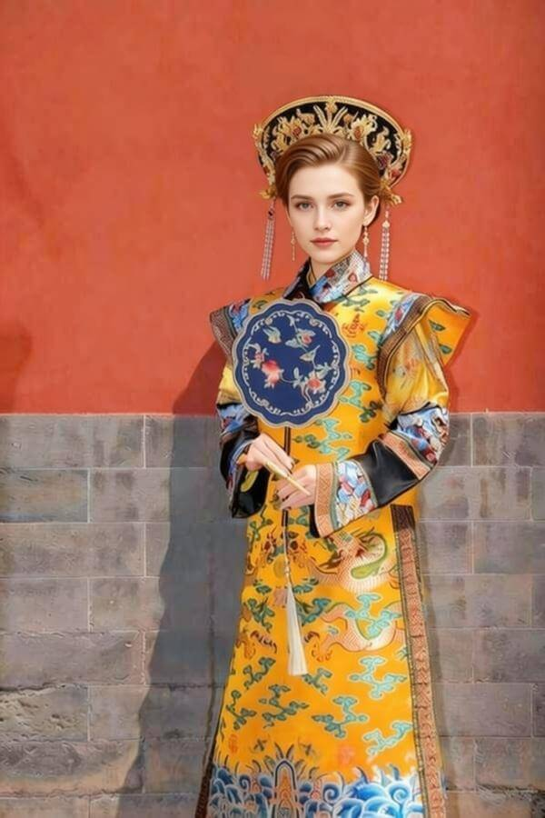
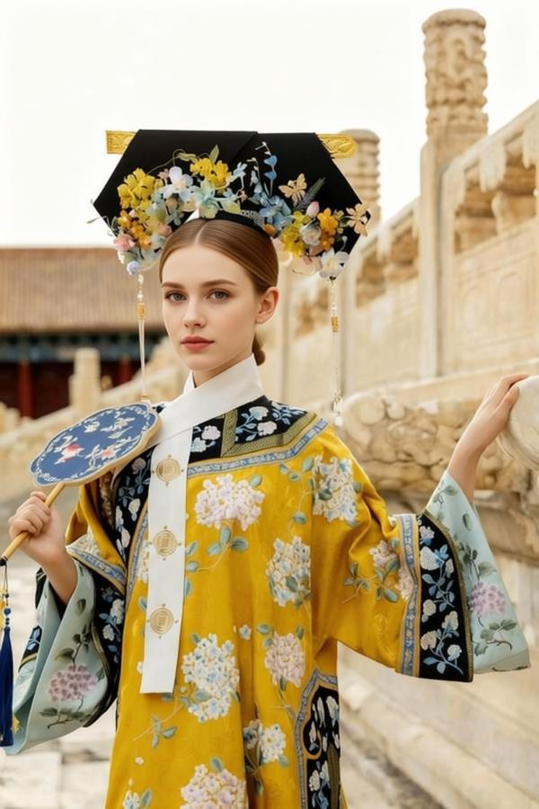
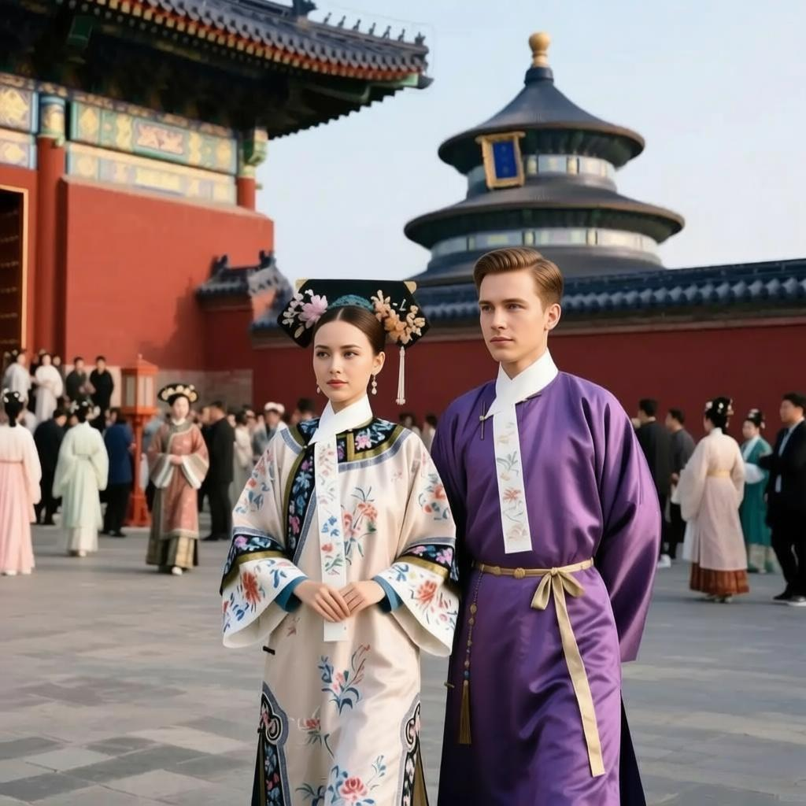

Table of Contents
Introduction
When foreign visitors walk through Beijing's attractions, they're often captivated by people dressed in traditional Hanfu — flowing robes that evoke China's imperial past. In the Forbidden City, wearing Hanfu makes you feel like the all-powerful emperor; at Jingshan Park, you could be a concubine enjoying the palace gardens; at the Summer Palace, you become royalty basking in spring sunshine. You've probably seen countless such photos on Instagram. But after admiring these images, many visitors have questions: "Why do all these costumes look the same?" "What's special about Beijing Hanfu?" "I want to try it too — how do I rent one?" This guide answers all your questions.

1. Types of Hanfu — Why Does Everything Look the Same to Foreigners?
Hanfu isn't a single type of clothing — it's an umbrella term for traditional Han Chinese attire spanning from the Yellow Emperor era to the late Ming Dynasty. Just as Western fashion includes shirts, suits, and formal gowns, Hanfu comes in various styles. The most common classification is based on cutting and construction:
| Style | Characteristics & Description |
|---|---|
| Shang Chang (上衣下裳) | Separate top and bottom garments — the oldest style. The emperor's ceremonial robes (Mian Fu) were made in this style. |
| Shenyi (深衣) | One-piece robes extending from shoulder to feet, such as Qu Ju and Zhi Ju. More formal, suitable for ceremonial occasions. |
| Ruqun (襦裙) | Short jacket with long skirt — the most common women's style. Tang Dynasty's Qi Xiong Ruqun and Song Dynasty's Beizi both fall into this category. |
| Tongcai (通裁) | Full-length robes cut as one piece, not separated. Ming Dynasty's Yuanling Pao and Dao Pao are typical examples — the mainstream men's style. |

The reason foreigners think all Hanfu looks the same is that modern photography studios, for convenience, mostly choose the most visually stunning and easily recognizable styles. It's similar to how outsiders might think all Chinese food is just "Chinese food" — you need to look deeper to appreciate the nuances.
2. What Hanfu Styles Are Popular Today?
The most popular styles in Hanfu shops today are these three — simple, elegant, and highly photogenic:

Ming Dynasty Hanfu
Standing collar with horse-face skirt, dignified and majestic

Tang Dynasty Qi Xiong Ruqun
High-waisted long skirt, ethereal and romantic, fairy-like elegance

Song Dynasty Beizi
Simple and elegant, scholar temperament, fresh and refined
3. Hanfu in Beijing — Experience Being an Emperor, Concubine, or Empress
In Beijing, palace-themed Hanfu experience is the most distinctive! Wearing these costumes feels like stepping back 600 years into the Forbidden City.
Palace Role Costume Guide

The Emperor
Wearing dragon robes in bright yellow or black, embroidered with five-claw golden dragons. Paired with Yi Shan Guan (winged crown) or Wu Sha Guan (black hat), jade belt at the waist. Grand and majestic.

The Empress
Wearing Di Yi (pheasant robes) or elaborate Aoqun dresses in bright red or yellow. Embroidered with phoenix and peony patterns, phoenix crown on head, adorned with jewelry. Dignified and elegant.

The Concubine
More diverse color palette including moon-white, light purple, and sky blue. Standing collar long Ao jacket with horse-face skirt, elaborate but simpler than the Empress. Graceful and charming.

Scholar / Noble Lady
Scholars wear elegant robes with wide sleeves and scholar hats, carrying folding fans. Noble ladies wear flowing Ruqun dresses with delicate patterns and elegant hairstyles. Perfect for those who prefer a refined, classical look.
4. Want to Try Hanfu? How to Book Your Experience
Booking Hanfu experience in Beijing is easy! Here are two convenient ways:
| Booking Method | How to Book | Notes |
|---|---|---|
| Dianping App | Download the Dianping app → Search "汉服" (Hanfu) → Browse shops and styles → Select a package and book online | App is in Chinese only. Most packages include costume, makeup, and hairstyling. Prices: ¥299-¥899 |
| Our Service | Visit our Hanfu Guide Page → Contact us for personalized assistance | English-speaking support available. We handle translation and communication with shops. |
Frequently Asked Questions
Q: Do I need to make a reservation in advance?
A: Yes, we recommend booking 1-2 days ahead, especially during peak season (April-October) and holidays. Same-day bookings may have limited availability.
Q: Can foreigners wear Hanfu?
A: Absolutely! Hanfu experience is open to everyone. Many shops have English-speaking staff, and we'll be happy to assist with translation and booking.
Q: How long does the experience take?
A: The typical experience takes 2-4 hours, including costume selection, makeup, photoshoot, and return. If you're visiting the Forbidden City, plan for a full day.
Q: What's included in the price?
A: Most packages include costume rental, professional makeup, hairstyling, and 1-2 hours of photography. Some premium packages also include transportation and additional outfit changes.
Ready to Experience Imperial Beijing?
Put on traditional Hanfu and walk through the gates of the Forbidden City. In that moment, you'll understand why emperors called this place home — and why millions of visitors every year come to experience a glimpse of imperial grandeur.
Need help with booking or have questions? Contact us and we'll make your imperial experience seamless.
Conclusion
From ancient Shang Chang to elegant Ming Dynasty robes, Hanfu represents over 4,000 years of Chinese cultural heritage. In Beijing, this tradition comes alive in the shadow of the Forbidden City, offering visitors a chance to step back in time and embody the grace of imperial China.
Whether you choose to dress as an emperor commanding the court, a noble lady strolling through gardens, or a scholar lost in thought, the Hanfu experience in Beijing is more than just photos — it's a journey into China's rich historical tapestry. Book your experience today and create memories that will last a lifetime.
Share this article:
Link copied to clipboard!